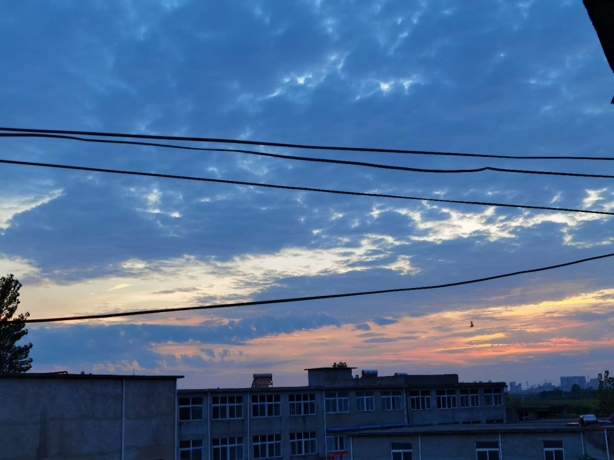

首先，我必须要再次欢迎大家的访问.毕竟这是一个如此小的一个个人主页。
这是我的第一个网站，当然不会是最后一个。我发现编网站确实还是很好玩的。尽管这是第一个，但我还是想认真做一下。
我是 单广东,为20级药学院学生.虽然我在高中时并不对药学感兴趣,但我应该去投入。毕竟总会遇见一些意料之外的事情，总该勇于面对。
个人兴趣广泛（虽然学的都不算精通），如绘画，围棋（快忘了），篮球，羽毛球，乒乓球(都在尝试重新拿起来），当然最厉害的是我挺喜爱自言自语（可能并不应该认为它是一个兴趣 对了，还有看动画片。，。
这是我喜欢的一个动漫身后的一个网站。你们可以去看一下，当然这也是给它拉一下人气啦。，。 超神学院
而下面这个是其中的一个壁纸，大家可以欣赏一下哈。
首先，我想说我是挺喜爱思考一些奇奇怪怪的问题的，特别是在物理生物和计算机方面。主要的方面是对于有关定律的思考（幻想。 当然这可能并不是因为我想的多，以及善于思考。相反，可能只是自己对于知识的不了解和缺少主动查阅资料的能力，以至于我曾经在高中“烦”了我的另一个“知己”快三年的时间。（用一些在他看来相当显而易见的问题去问他。。。尽管可能我也是这么认为的。但我还是不厌其烦的去问他（手动狗头）。当然他也确实给我拓展了许多知识。 故在此表以答谢。。）
